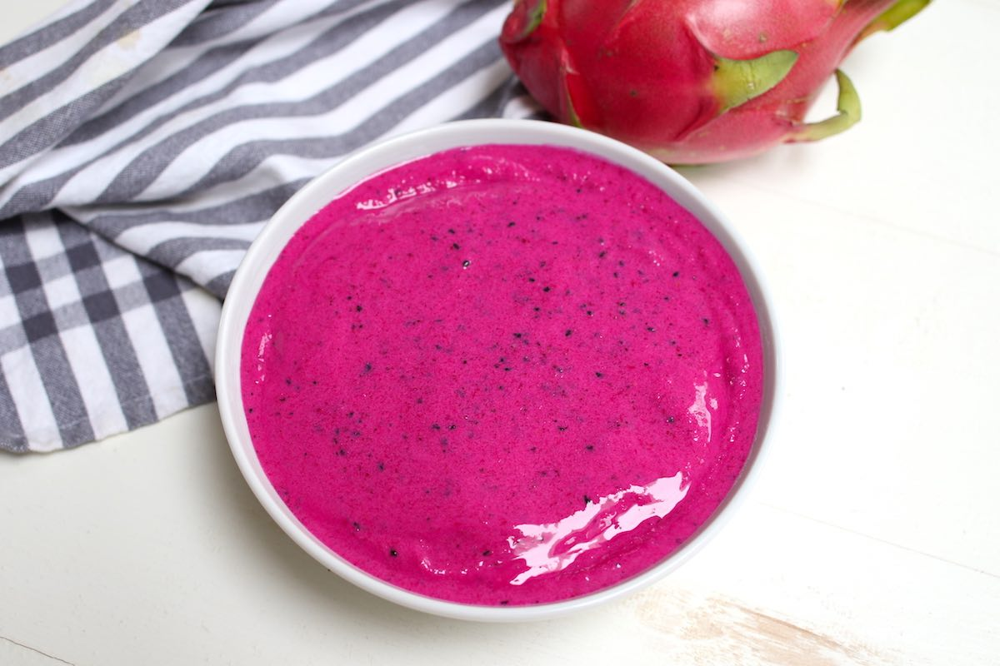
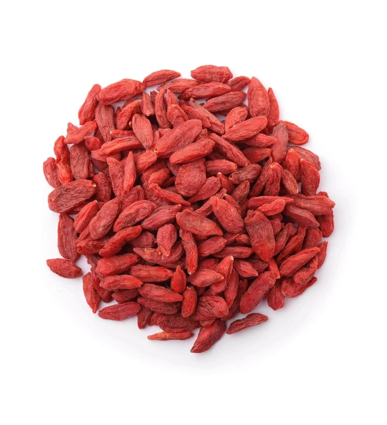
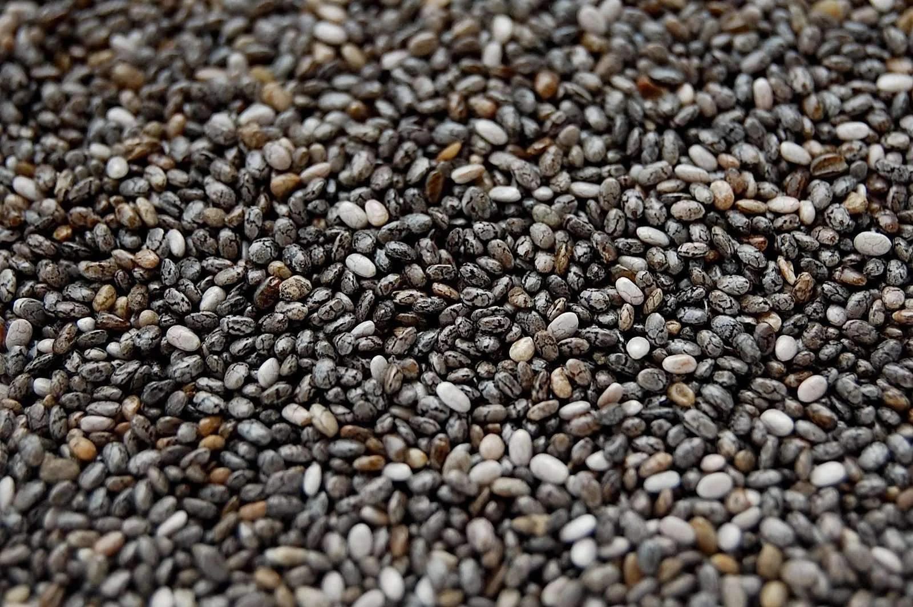

A list of our some of our Healthy Ingredients
-
Coconut Flakes
Benefits of Cocunut Flakes
- Dietary Fiber: Fiber helps promote regular bowel movements, prevent constipation
- Healthy Fats: Coconut flakes contain healthy fats, primarily in the form of medium-chain triglycerides (MCTs). MCTs are easily digestible fats that can provide a quick source of energy
- Nutrient Content: Coconut flakes contain essential nutrients such as iron, potassium, manganese, and copper.
- Antioxidants: Coconut contains antioxidants, including phenolic compounds, which can help protect cells from oxidative stress and reduce inflammation in the body.
-

Pitya
Benefits of Pitya
- Rich in Nutrients: Dragon fruit is low in calories and rich in essential nutrients, including vitamin C, vitamin B, iron, magnesium, and dietary fiber.
- Antioxidant Properties: The vibrant colors of dragon fruit are attributed to its high content of antioxidants
- Hydration: Dragon fruit has a high water content, which can help keep you hydrated and support overall bodily functions.
- Skin Health: The antioxidants in dragon fruit may contribute to healthy and radiant skin
-
Acai
Benefits of Acai
- Heart Health: Some studies suggest that acai berries may have a positive impact on heart health by helping to lower cholesterol levels and improve blood lipid profiles.
- Anti-Inflammatory Properties: Acai berries contain compounds that have anti-inflammatory effects.
- Brain Health: Acai berries contain nutrients that could support brain health, such as anthocyanins and polyphenols.
- Digestive Health: Acai berries are a good source of dietary fiber, which is essential for a healthy digestive system. A
-
Mango
Benefits of Mango
- Natural Electrolyte Source: Mangoes are a natural source of electrolytes like potassium and magnesium, which are important for maintaining proper fluid balance, muscle function, and overall hydration.
- Improves Hair Health: The vitamin A content in mangoes helps in the production of sebum, which keeps the scalp moisturized and promotes healthy hair growth.
- Lowers Cholesterol: Certain compounds in mangoes, such as pectin and soluble fiber, may contribute to reducing cholesterol levels, thereby supporting heart health.
- Cancer Prevention: Some studies suggest that the antioxidants and phytochemicals in mangoes may have potential anti-cancer properties, although more research is needed to fully understand their impact.
-

Goji
Benefits of Goji
- Cognitive Function: Goji berries contain compounds that may support cognitive function and brain health, potentially reducing the risk of neurodegenerative diseases.
- Anti-Aging Benefits: The antioxidants in goji berries can contribute to youthful skin by reducing oxidative stress and supporting collagen production, helping to maintain healthy, glowing skin.
- Digestive Health: Goji berries contain dietary fiber that supports healthy digestion and can help regulate bowel movements, preventing constipation.
- Stress Reduction: Some studies suggest that goji berries may have adaptogenic properties, which can help the body better manage stress and promote a sense of well-being.
-

Chia
Benefits of Chia
- Blood Sugar Regulation: The soluble fiber in chia seeds can help stabilize blood sugar levels by slowing down the digestion and absorption of carbohydrates.
- Hydration: When soaked in water, chia seeds absorb liquid and form a gel-like consistency. This property can help maintain hydration and electrolyte balance in the body.
- Plant-Based Protein: Chia seeds provide a high-quality plant-based protein source, making them suitable for vegetarians and vegans looking to meet their protein needs.

.jpeg)
.jpeg)